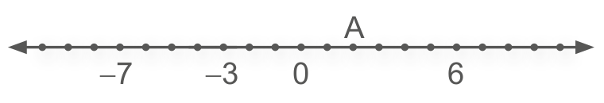
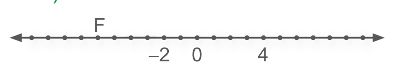
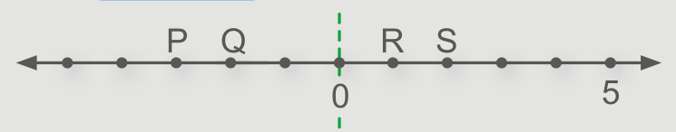
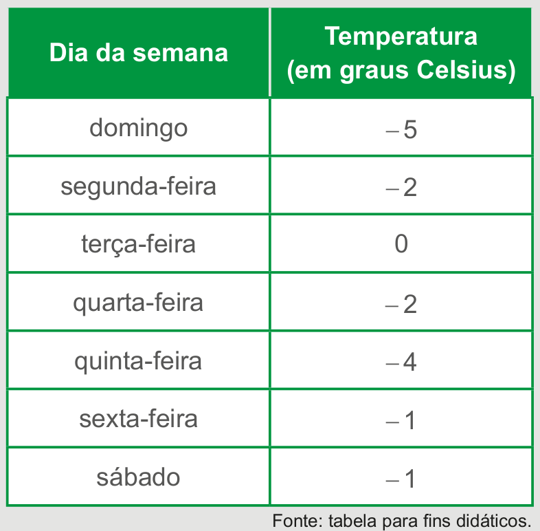
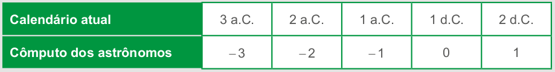

CAPÍTULO 3 - Módulo de um número racional
Você já sabe que os números racionais podem ser representados por um ponto em uma reta numérica.
A seguir, temos representados os números - 3 e + 3.

1. Troque ideias com um colega e respondam: Qual é a distância de - 3 até o 0 (zero)?

A distância entre um ponto que representa esse número na reta e o ponto que representa o 0 (zero) se chama módulo ou valor absoluto deste número.
A distância do número -3 ao 0 (zero) corresponde a três unidades. Como a distância entre o + 3 e o 0 (zero) também é de três unidades, dizemos que:
- |- 3| = 3 (Lemos: módulo de menos três é igual a três).
- |+ 3| = 3 (Lemos: módulo de três é igual a três).
Os números - 3 e + 3 são chamados de opostos ou simétricos, pois estão à mesma distância de 0 (zero).
Veja outros exemplos de números opostos ou simétricos:
- - 5 e + 5.
- - 7 e + 7.
- -\(\frac{3}{5}\) e +\(\frac{3}{5}\)
- -6,1 e +6,1
31
UNIDADE 1 - CAPÍTULO 3
ENCONTRE SOLUÇÕES
1. Qual é o módulo de:
a) |- 13|?
b) |\(-\frac{8}{7}\)|?
c) |-4|?
d) |\(-\frac{6}{11}\)|?
e) |- 8|?
f) |8|?
g) |- 145|?
h) |1 243|?
i) |24|?
j) |\(\frac{3}{5}\)|?
k) |- 32|?
l) |9,75| ?
2. No caderno, represente em uma reta numérica cada número abaixo e o seu oposto.
- -2
- \(\frac{1}{2}\)
- 3,5
- +4
3. Entre os números racionais - 15; + 42; - 27, 5; - 29; + 31; + 19,2 e - 55, qual tem maior módulo?
4. Em cada uma das expressões abai- xo, x representa um número racional. Quais são os possíveis valores de x?
a) |x| = 15 ?
b) |x| = 8,7 ?
c) |x| = 27 ?
d) |x| = \(\frac{1}{4}\) ?
5. Dados os números inteiros - 7, +12, - 104, + 16, + 44, - 21, - 1 e + 120, escreva:
a) os números em ordem crescente;
b) os números em ordem decrescente;
c) os módulos dos números em ordem crescente.
6. Observe as retas numéricas representadas abaixo. Identifique o número que cada letra representa e, em seguida, escreva o seu oposto.
a)
b)
c)

d)

e)

f)
7. Leia as afirmações abaixo e, em seu caderno, identifique as verdadeiras e corrija as falsas.
a) - 0,3 e 0,03 são números opostos.
b) O módulo de -5 é igual a cinco.
c) \(-\frac{2}{5}\) e + 0,4 são números simétricos.
d) O módulo de \(-\frac{1}{2}\) é igual a - 0,5.
e) - 2,2 e + 2,2 são números opostos.
f) 1,02 e -1,002 são números simétricos.
g) O módulo de 13 é igual a 13.
32
UNIDADE 1 - CAPÍTULO 3
PROBABILIDADE E ESTATÍSTICA
- Gráficos de linha
A partir da década de 60, houve uma queda da taxa de fecundidade no Brasil. De acordo com o IBGE, a média de filhos por mulher diminuiu de 6,3 para 1,7. Esta redução se deve às mudanças econômicas e sociais que ocorreram na sociedade.
No gráfico, a seguir, temos representada a evolução das proporções de crianças, jovens e idosos no Brasil desde 1940 até o ano de 2010.

Evolução das proporções de crianças, jovens e idosos no Brasil
1. Leia as informações contidas no texto e no gráfico. Em seguida, troque ideias com um colega para responder às questões abaixo.
a) Em sua opinião, por que a proporção de idosos no Brasil aumentou?
b) De acordo com o gráfico, a partir de que ano iniciou-se a queda da proporção de crianças e jovens no Brasil?
c) Em que ano a proporção de idosos no Brasil foi menor?
O gráfico utilizado para representar as informações sobre a proporção de crianças, jovens e idosos no Brasil denomina-se gráfico de linhas.
33
UNIDADE 1 - CAPÍTULO 3
2. De acordo com o IBGE, consideram-se zonas urbanas todas as áreas correspondentes às cidades (sedes municipais), às vilas (sedes distritais) ou às áreas urbanas isoladas.
Agora, em dupla, façam a leitura do gráfico.
a) Qual é o título do gráfico?
b) Em 1990, qual era a porcentagem da população que vivia em zonas urbanas em relação à população total?
c) De acordo com a previsão feita, podemos afirmar que em 2030 a população na zona urbana será mais que o dobro da população registrada em 1960?
3. O dono de uma farmácia resolveu colocar à vista do público o gráfico mostrado a seguir, que apresenta a evolução do total de vendas (em Reais) de certo medicamento ao longo do ano de 2011.
De acordo com o gráfico, os meses em que ocorreram, respectivamente, a maior e a menor venda absoluta em 2011 foram:
a) março e abril.
b) março e agosto.
c) agosto e setembro.
d) junho e setembro.
e) junho e agosto.
34
UNIDADE 1 - CAPÍTULO 3
4. (ENEM) A figura a seguir apresenta dois gráficos com informações sobre as reclamações diárias recebidas e resolvidas pelo Setor de Atendimento ao Cliente (SAC) de uma empresa, em uma dada semana. O gráfico de linha tracejada informa o número de reclamações recebidas no dia, o de linha contínua é o número de reclamações resolvidas no dia. As reclamações podem ser resolvidas no mesmo dia ou demorarem mais de um dia para serem resolvidas.
O gerente de atendimento deseja identificar os dias da semana em que o nível de eficiência pode ser considerado muito bom, ou seja, os dias em que o número de reclamações resolvidas excede o número de reclamações recebidas.
O gerente de atendimento pôde concluir, baseado no conceito de eficiência utilizado na empresa e nas informações do gráfico, que o nível de eficiência foi muito bom na:
a) segunda e na terça-feira.
b) terça e na quarta-feira.
c) terça e na quinta-feira.
d) quinta-feira, no sábado e no domingo.
e) segunda, na quinta e na sexta-feira.
5. No gráfico abaixo temos os 12 estados com maior variação em casos de dengue entre 2020 e 2021. A dengue é uma doença infecciosa causada por vírus e transmitida pelo mosquito Aedes aegypti e, em baixíssima escala, pelo Aedes albopictus. A maior ocorrência de casos acontece no verão, quando as chuvas são mais frequentes.
35
UNIDADE 1 - CAPÍTULO 3
De acordo com o gráfico, responda em seu caderno:
a) Em qual estado ocorreu a maior quantidade de casos em 2020?
b) Em qual estado ocorreu a maior quantidade de casos em 2021?
c) Qual é a diferença entre a quantidade de casos no Acre de 2020 para 2021?
d) Em sua opinião, o que podemos fazer para prevenir a proliferação desta doença?


1. (OBMEP) O gráfico mostra o número de casos notificados de dengue, a precipitação de chuva e a temperatura média, por semestre, dos anos de 2007 a 2010 em uma cidade brasileira. Podemos afirmar que:
a) O período de maior precipitação foi o de maior temperatura média e com o maior número de casos de dengue notificados.
b) O período com menor número de casos de dengue notificados também foi o de maior temperatura média.
c) O período de maior temperatura média foi também o de maior precipitação.
d) O período de maior precipitação não foi o de maior temperatura média e teve o maior número de casos de dengue notificados.
e) Quanto maior a precipitação em um período, maior o número de casos de dengue notificados.
36
UNIDADE 1 - CAPÍTULO 3
RELEMBRE
1. Os números 2, 1, - 2 e - 3 ocupam, na reta numérica abaixo, as posições indicadas respectivamente pelas letras:
a) P, Q, S e R;
b) Q, P, R e S;
c) R, S, Q e P;
d) S, R, Q e P.
2. (ENEM) João decidiu contratar os serviços de uma empresa por telefone através do SAC (Serviço de Atendimento ao Consumidor). O atendente ditou para João o número do protocolo de atendimento da ligação e pediu que ele anotasse. Entretanto, João não entendeu um dos algarismos ditados pelo atendente e anotou o número 1 3 _ 9 8 2 0 7, sendo que o espaço vazio é o do algarismo que João não entendeu. De acordo com essas informações, a posição ocupada pelo algarismo que falta no número de protocolo é a de
a) centena.
b) dezena de milhar.
c) centena de milhar.
d) milhão.
e) centena de milhão.
3. O salário de Rafael era de R$ 820,00. Sabendo que ele recebeu um aumento de 20%, de quanto passou a ser o seu salário?
4. Considere as afirmações:
- - 3 é um número inteiro.
- 0,9 é um número natural.
- \(\frac{1}{4}\) é um número inteiro.
Quantas delas são verdadeiras?
a) 0
b) 1
c) 2
d) 3
5. Leia as afirmações a seguir.
- Todo número natural é um número inteiro.
- Todo número inteiro é um número natural.
- Todo número inteiro positivo é um número natural.
Podemos dizer que:
a) todas as afirmações são falsas;
b) todas as afirmações são verdadeiras;
c) somente as afirmações I e II são verdadeiras;
d) somente as afirmações I e III são verdadeiras;
e) somente as afirmações II e III são verdadeiras.
37
UNIDADE 1 - CAPÍTULO 3
6. (UEMG) No feirão, o quilograma de maçãs custa R$ 2,75, o quilograma de laranjas, R$ 0,80 e o quilograma de mamão, R$ 0,90. Sandra quer fazer uma salada de 1,5 quilograma de maçãs, \(\frac{1}{2}\) quilograma de laranjas e \(\frac{3}{4}\) quilogramas de mamão. Qual é a despesa de Sandra com a salada?
a) R$ 6,00
b) R$ 5,55
c) R$ 5,20
d) R$ 4,95
7. Das alternativas abaixo, a que apresenta uma sequência em ordem crescente é:
a) |- 3|, |- 4|, |- 5|, + 6, - 7
b) - 2,1; - 3,5; - 4,1; - 5,4; - 6,9
c) - 1, 0, 1, |- 2|, |- 3|, 4
d) 0, - 1, - 2, - 3, - 4, - 5
e) 5, 4, 3, 2, 1, 0
8. (UTFPR) Numa cidade \(\frac{1}{5}\) da população mora no centro e os demais 285 mil moram nos outros bairros. Quantas pessoas dessa cidade moram no centro?
a) 95 000
b) 67 750
c) 58 000
d) 86 500
e) 71 250
9. tabela a seguir apresenta a temperatura média diária registrada, durante uma semana, em determinada cidade.
Temperaturas médias registradas de 08/07 a 14/07 de 2022
A maior temperatura registrada nessa semana foi:
a) no domingo;
b) na segunda-feira e na quarta-feira;
c) na terça-feira;
d) na quinta-feira;
e) na sexta-feira e no sábado.
10 (UTFPR) A quantidade de números inteiros entre 50 e 100 que sejam múltiplos dos números 3 e 4 ao mesmo tempo é:
a) 3
b) 4
c) 5
d) 13
e) 17
38
UNIDADE 1 - CAPÍTULO 3
11 (ENEM) No calendário utilizado atualmente, os anos são numerados em uma escala sem o zero, isto é, não existe o ano zero. A era cristã se inicia no ano 1 depois de Cristo (d.C.) e designa-se o ano anterior a esse como ano 1 antes de Cristo (a.C.). Por essa razão, o primeiro século ou intervalo de 100 anos da era cristã terminou em 31 de dezembro do ano 100 d.C., quando haviam decorrido os primeiros 100 anos após o início da era. O século II começou no dia 1 de janeiro do ano 101 d.C., e assim sucessivamente. Como não existe o ano zero, o intervalo entre os anos 50 a.C. e 50 d.C., por exemplo, é de 100 anos. Outra forma de representar anos é utilizando-se números inteiros, como fazem os astrônomos. Para eles, o ano 1 a.C. corresponde ao ano 0, o ano 2 a.C., ao ano -1, e assim sucessivamente. Os anos depois de Cristo são representados pelos números inteiros positivos, fazendo corresponder o número 1 ao ano 1 d.C.
Considerando o intervalo de 3 a.C. a 2 d.C., o quadro que relaciona as duas contagens descritas no texto é
a)

b)

c)

d)
e)
39
UNIDADE 1 - CAPÍTULO 3